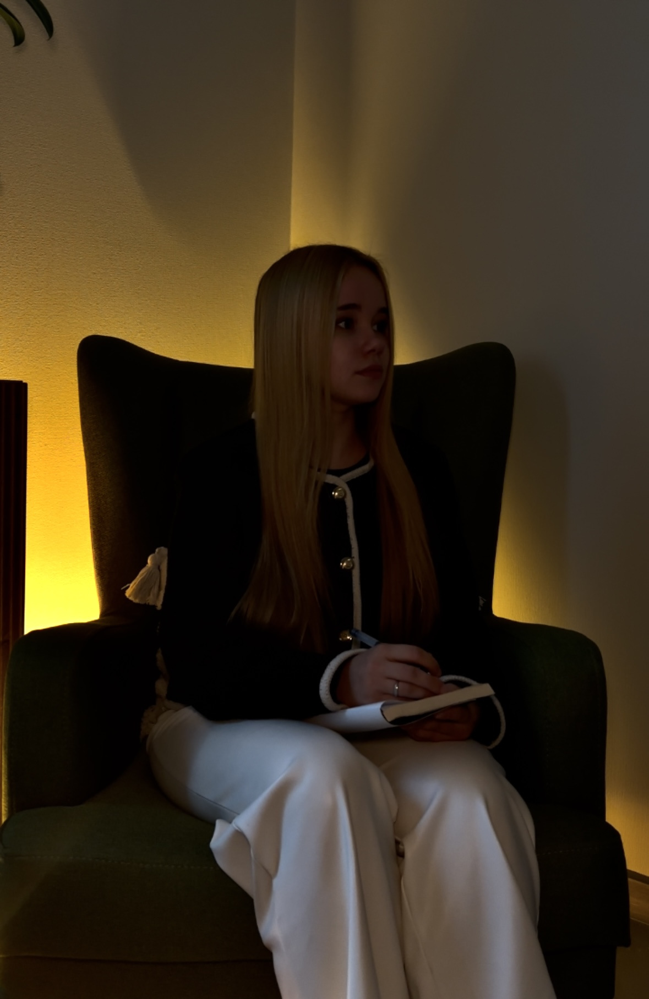
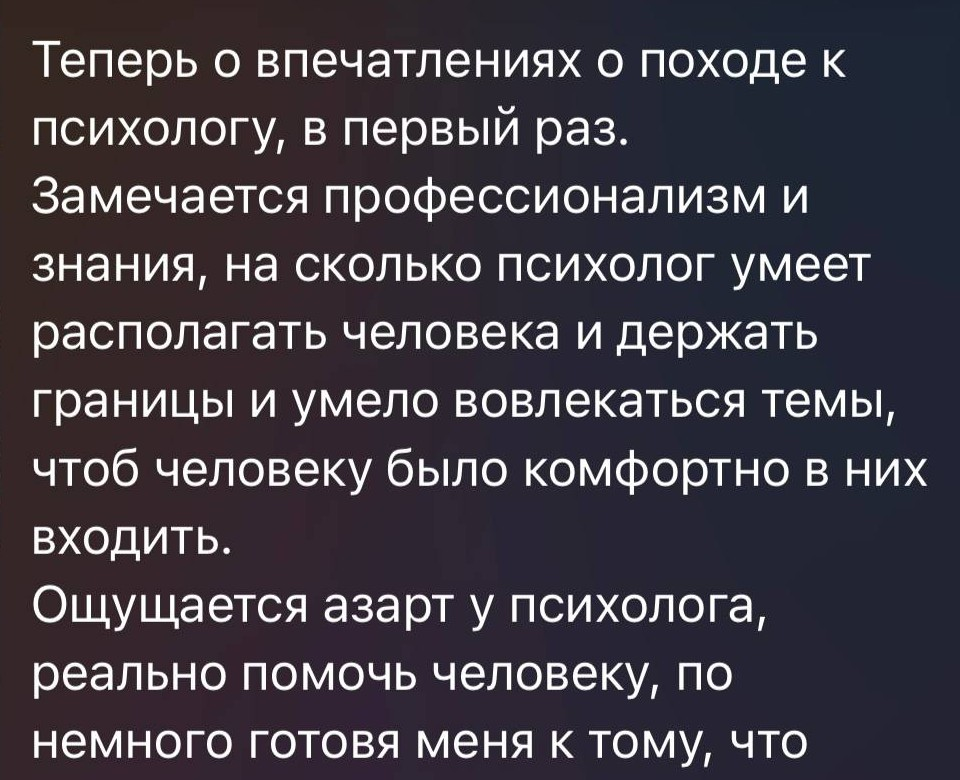
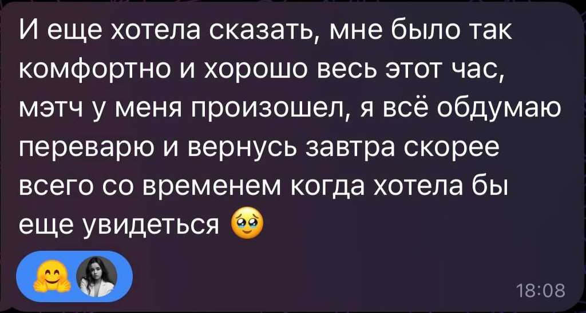

Помогаю разобраться в себе, отношениях и чувствах — бережно, внимательно и с уважением к индивидуальности вашей истории.

Если вы часто тревожитесь, сомневаетесь в себе, зависите от чужого мнения или не понимаете, чего хотите — с этим не обязательно справляться в одиночку.
На консультации мы вместе разбираемся в том, что с вами происходит и почему, чтобы вы могли лучше понимать себя, свои чувства и желания и находить собственные решения.
Использую разные психологические инструменты в зависимости от вашего запроса, особенностей личности и ситуации.
Мне важно не подгонять человека под метод, а подбирать подход под человека. В работе для меня важны доверие, безопасность и уважение к вашему темпу.
Изучаю психологию и продолжаю профессионально развиваться.
Получаю первый диплом по направлению «Практическая психология личности».
Параллельно обучаюсь по направлению «Психология и социальная педагогика».
Прошла курс Университета «Симург» «Эмоциональная зрелость». Регулярно прохожу новые обучения, посещаю научные конференции, лекции и профессиональные мероприятия.
За время практики я провела более 50 консультаций.
Провожу игры и тренинги, направленные на поиск внутренних опор, самопознание, личностное развитие, работу с эмоциями и взаимодействие с другими людьми. У меня есть отзывы клиентов, которыми я бережно дорожу.
Оптимальный формат для регулярной работы с вашим запросом.
Если хотите глубже разобрать ситуацию, уделить больше времени сложному запросу или провести более объёмную работу за одну встречу.
Когда поддержка нужна в ближайшее время и откладывать встречу не хочется. Мы сосредотачиваемся на том, что происходит с вами сейчас, структурируем ситуацию и определяем ближайшие шаги.
Экстренная психологическая помощь не заменяет медицинскую или кризисную помощь при угрозе жизни или безопасности.
Из любой точки мира.
В уютном кабинете в центре города Чебоксары.
Формат встречи можно выбрать в зависимости от вашего запроса и возможностей.
Можно начать даже с простой фразы:
«Я не понимаю, что со мной происходит, но хочу в этом разобраться».
Мы вместе определим, что сейчас действительно важно, и будем двигаться к большему пониманию себя и своей ситуации.


Возможно, сейчас самое время сделать первый шаг. Не обязательно ждать момента, когда станет совсем тяжело. Иногда достаточно признать: «Я хочу лучше понять себя».
Выберите подходящий формат и напишите мне — я отвечу на ваши вопросы и помогу определиться с вариантом встречи.
Написать в TelegramНаписать в Max